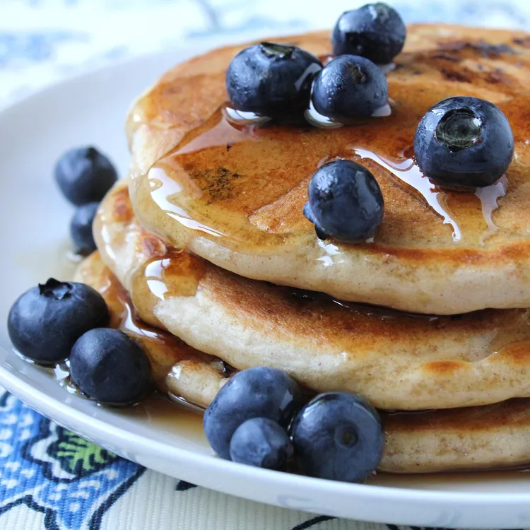

Blueberry Pancakes

Description
These blueberry pancakes are the most fabulous pancakes ever! Serve them with butter and brown sugar. Well worth the hour wait!
This recipe makes about 12 pancakes and takes 10 minutes to prep and 15 minutes to cook, with an hour waiting time in between.
Ingredients
- 1 1/4 cups all-purpose flour
- 1 tbsp baking powder
- 1 1/4 tsp cane sugar
- 1/2 tsp salt
- 1 cup milk
- 1 egg
- 1/2 tbsp butter, melted
- 1/2 cup frozen blueberries, thawed
Steps
- Sift flour, baking powder, sugar, and salt together in a large bowl. Combine milk and egg in a small bowl. Stir egg mixture into flour mixture until just combined. Stir in melted butter, then fold in blueberries. Set aside for 1 hour.
- Heat a lightly oiled griddle or frying pan over medium-high heat.
- Pour or scoop the batter onto the hot griddle, using approximately 1/4 cup for each pancake; cook until bubbles appear on the surface, then flip and cook until golden brown on both sides.
- Serve hot with toppings of your choice.